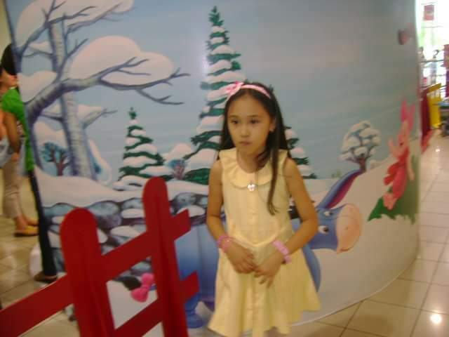

<!DOCTYPE html> 
<html lang="en">
<head>

<link rel="preconnect" href="https://fonts.gstatic.com">
<link href="https://fonts.googleapis.com/css2?family=Lobster&display=swap" rel="stylesheet">

<meta charset="utf-8">
<title> ABOUT ME </title>
<style type="text/css">
body {
	background: url(Photos/shade2.jpg);
	background-size: 100% 105%;
	border: 10px solid #6F4E37;
	
	font-size: 1.30em;
}
.box {
	width: 1250px;
	padding: 50px;
	background-color: #FFF5EE;
	background-size: 100%;
	
	margin:auto;
	margin-top: 5.5%;
	margin-bottom: 5.5%;
	
	text-align:center;
	font-family: 'Georgia';
	color: #6F4E37;
}
h1{
	text-align: center;
	color: #FFF5EE;
}
h2 {
	text-align: center;
	color: #FFF5EE;
}
h2 {
	text-align: left;
	color: #FFF5EE;
}
img {
	width: 300px;
	padding: 30px;
	float: left;
}		
img.inside{
	width: 300px;
	padding: 30px;
	float: right;
}		
</style>
	
</head>
<body>
    <link rel="stylesheet" type="text/css">
	
    <!--DELICA, JESSY MARIE I.-->
    <!--1.28.2021-->
	
	
	<h1 style="font-family: 'Georgia'; text-align:center; background-color: #EDC9AF; color:#6F4E37; font-size: 4em; font-style: italic; word-spacing: 7px; letter-spacing: 7px;"> A Glimpse of Who I am, </h1>
	<hr color="black" width="80%" align="center" size="4.5">
	<h4 style="font-family: 'Quicksand', Sans-Serif; text-align:center; font-style: italic; color: #954535;"><q> You may not control all the events that happen to you, but you can decide not to be reduced by them.<cite> – Maya Angelou </cite></q></h4></th> 
	<hr color="black" width="80%" align="center" size="4.5">
	
	<div class="box">
	<h1 id="Childhood"></h1>
	
	<blockquote><h2 style = "font-family: Georgia; text-align:left; font-variant: all-caps; font-style: italic; font-weight: bold;"><mark style = "background-color: #EDC9AF;"> – Childhood Years – </h2></blockquote></mark>
	<div align ="justify">
	<blockquote>
	<hr color="#6F4E37" width="28%" align="left" size="5">
	<p style ="line-height:1.5;">
	
	<div class="right">
	
	</div>
	
		&nbsp;&nbsp;&nbsp;&nbsp; My name is Jessy Marie I. Delica, born on November 26, 2000 in Sta. Rosa City, Laguna.
		My family and relatives describe me as a quiet girl and very much of a homebody.
		When I turned 3 years old, I begged to my parents to let me study because I was so envious of the kids around our subdivision going out and taking their leisure outside.
		I attended pre-school at MEI or Meridian Education Institute and was also remembered as the muse who was awarded by the city's current mayor.
		I then attended kindergarten at Canossa School around year 2006.
		I used to be super active– I participated in different clubs, contests and was part of the Student Council as well.
		When I turned 10 years old, I was diagnosed with Scoliosis and was forced to drop every extracurricular activities I often participated on.
		Despite such disabilty and even though I was told to stop participating in such activities; Sports: Badminton, Cheerleading, and Dancing, I continued still until I graduated and was unable to do more energy-consuming activities.
		Being diagnosed and being told to stop what I normally do back then was too much for me to take, it took a toll on me but I guess t'was like a blessing as well.
		And ever since I was told to stop doing activities I usually do- I diverted my attention to making more friends and just being enough with having good grades. <br><br><br>
	
	<div class="right">
	
	</div>
	
		&nbsp;&nbsp;&nbsp;&nbsp; I started reading fictional and non-fiction books.
		I also began to binge-watch series, may it be cartoons, anime, or live action ones to spare myself from boredom.
		When things don't go the way I wanted them to be, I don't usually lash out- I learned how to surpress emotions not because I was taught to but for the reason that it is the best and wise decision for me, so that I don't make rash sentiments.
		I was around 10 years old as well when I first learned how to brew and make coffee.
		Coffee was like a placebo thing for me for it calms me when I'm angry or upset.
		The only downside of this is that I began drinking it on a daily basis (every morning) which is unusual for kids.
		I wasn't really that close to my family which made it hard for me to open up few things.
		During my childhood years, I experienced verbal and sexual abuse, to which now, I still do but this time I often fight and stand up for myself.
		There are fragments I don't remember from ages 5-6 and 8-9 years old.
		I don't remember much about my much younger days other than the things said above, I don't have plans either on knowing them, I may have forced myself to forget a few for a reason and what my parents told me about.
		
	</p>
	
	<br>
	
	<h1 id="Teenage"></h1>
	
	<h2 style = "font-family: Georgia; text-align:right; font-variant: all-caps; font-style: italic; font-weight: bold;"><mark style = "background-color: #EDC9AF;"> – Teenage Years – </h2></mark>
	<div align ="justify">
	<hr color="#6F4E37" width="25%" align="right" size="5">
	<p style ="line-height:1.5;"> 
	
	<div class="right">
	
	</div>
	
		&nbsp;&nbsp;&nbsp;&nbsp; I graduated 6th grade at Canossa School, I transferred to Colegio de Sta. Rosa de Lima to continue my High School life.
		Year 2013, my mom was diagnosed with breast cancer.
		I didn't know what to do back then and how to cope up from the schock and fear.
		I went back to dancing as my way of coping up and to kill some time, t'was my first time not to ask for my parents' permission regarding the sudden decision of participating in an event that might worsen my physical state.
		I was 13 years old (1st Year, freshmen year) when Colegio de Sta. Rosa de Lima won at the dance competition for the Sikhayan Festival that was held at our city's plaza, went home with a trophy for the school and a gold medal for each dancer who poured their hearts in dancing to win.
		After that won, I completely stopped dancing and participated in a contest that I am and will forever be proud of, the Brain Challenge contest, in which my group won the first place and was awarded with a medal at the end of my sophomore year.
		And during my 2nd year, I had my first boyfriend.
		My parents aren't strict about me having a boyfriend or a suitor, in fact, they find it amusing because I have this personality that I always put up front so that people whom I don't want to vibe with will have to go away because in their point of view, I am not likeable, and with that, my parents find it amazing and weird that someone had laid its eyes on me.
		My first boyfriend was two years older than me and to be honest, the relationship was more like forced, I don't like nor love the boy and just went with it maybe due to my curioisty as to what do girlfriends and boyfriends do and share.
		The relationship started rocky and ended quite bad before I turned 15 but I didn't think much of it because I was young.
		I also had my very first best friend and her name is Mariah Erica, a classmate of mine, whom I share almost everything, both of our families treat each other as if they're best friends too. <r><br><br>
	</p>
	
	<div class="right">
	
	</div>
	
	<p style ="line-height:1.5;">  
		&nbsp;&nbsp;&nbsp; When my junior year started (15 years old), I was transferred from Class C to Class B and there, my real high school life started.
		I made friends with whom lasted up until now.
		I became an out-going person (though there are times that I don't hang out with them because I have a lot of cicrle of friends throughout high school) and a vocal one.
		I had my second (2nd year college student) and third (from the same batch but was one year younger than me) boyfriend around this time too (late 2015-early 2016) and both relationships didn't end well either.
		Had my first prom around this year too.
		Fourth year, senior year came- Since me and my friends are graduating students, we were caught up in different problems (boy problems too, had my fourth boyfriend from the same batch but broke things off after 2 months and a half of dating, courting), family and school but managed still before we graduated.
		A month before CSRLI's graduation (batch 2016-2017), my father was rushed to the hospital, had a heart attack and stroke for the second time (the first time was after I was born).
		Me and my family were able to recover before that once in a lifetime event and went on with our lives.
		I wasn't really planning to enroll for Senior High School because I don't know what strand and possible course to take but was pursuaded to by my brother.
		I took an exam at the University of the East and took GAS or General Academic Strand, there, I met more open-minded and vocal people which I respected and loved (classmates from GAS 11-1M, GAS 12-1P, Professors from different strands who guided me throughout my Senior High life, Dorm mates [Soon to be Atty. Antoinette, Jana, and Karylle]), I was 16 years old when I left Laguna to go to Manila.
	</p>
	
	<br>
	
	<h1 id="College"></h1>
	
	<h2 style = "font-family: Georgia; font-variant: all-caps; font-style: italic; font-weight: bold;"><mark style = "background-color: #EDC9AF;"> – College Years – </h2></mark>
	<div align ="justify">
	<hr color="#6F4E37" width="24%" align="left" size="5">
	<p style ="line-height:1.5;">
	
	<div class="right">
	
	</div>
		
		&nbsp;&nbsp;&nbsp;&nbsp; Before graduating Senior High (batch 2018-2019), Students from the university are ought to take the college entrance exam, I took two exams, one normal exam and the other is for dentistry- which has two sets of exam and passed them all.
		Passing exams from different universities still didn't give me enough drive to continue studying, I have no motivation nor do I lack encouragement– I was always praised and rewarded, yet, none of these gave me the energy to really think about my future.
		Thinking hard for two consecutive months, I've decided to just take the course that my brother would suggest, He suggested that I should take Computer Science– to which is a really different environment from my pre-school to senior high school experience.
		Despite being afraid, I took a leap of faith and tried something out of my comfort zone, at first t'was hard, actually, it's still hard up until this point because I still don't know what course or field to really go for.
		Even so, I managed and continued doing so because of the friends and I met (Jessica,Sherrill, Bernadette, Jheff, Sherjie, Shawn, Ian, Gurmilap, Joyce, and many more from CSAD) during my first year days and Lance as well who took Bachelor of Science in Information Management.
		They made my first semester life, that is outside of my comfortable zone, bearable.
		I encountered a certain subject during my second semester which I hated to core for I think I'll forever be clueless of that subject- Calculus.
		I didn't take Pre-Cal or Bas-Cal during my SHS years, thus failed the subject but got an LFR instead (first year, second sem) because of the sudden cancellation of classes due to the spread of the Coronavirus-19/Covid-19.
		Months later, the university's calendar changed and the start of classes were moved from the month of June to August– just like the universities around U-belt.<br><br><br>
	
	<div class="right">
	
	</div>
	
		&nbsp;&nbsp;&nbsp;&nbsp; When classes started, I was still unsure whether to continue studying but went and enrolled for the second year, first semester to check and try myself if I can handle the new normal and the use or more tech stuff and staying at home (which I'm clearly not used to anymore since I stayed at the dorm my brother paid for 3 years).
		September came and my father, once again, was rushed to the hospital and had another stroke, the recent attack is considered fatal, said by the doctors.
		This happened during the prelim week.
		I wasn't able to do well in class and the exams as well.
		To cope and allign my thoughts, I took my brother's offer– to apply at the Cobena Business Analytics and Strategy and work as an intern (Data Analyst).
		I worked for a month– from November to December.
		The ones I worked with are all from the University of the Philippines-Diliman, all taking Bachelor of Science in Geodetic Engineering (same course as my brother, who also studied at UP Diliman).
		Was paid and spent it for my enrollment, check-ups, and new pair of glasses (eye glasses).
		Since I got to experience working (on the field that I might possibly take) while studying, It made me feel a little confident about the path I'm taking.
		I am currently and still taking Bachelor of Science in Computer Science and in my Second Year-Second Semester.
		
	</p>

	</div>
	
	<br>
	<br>
	
</body>
</html>